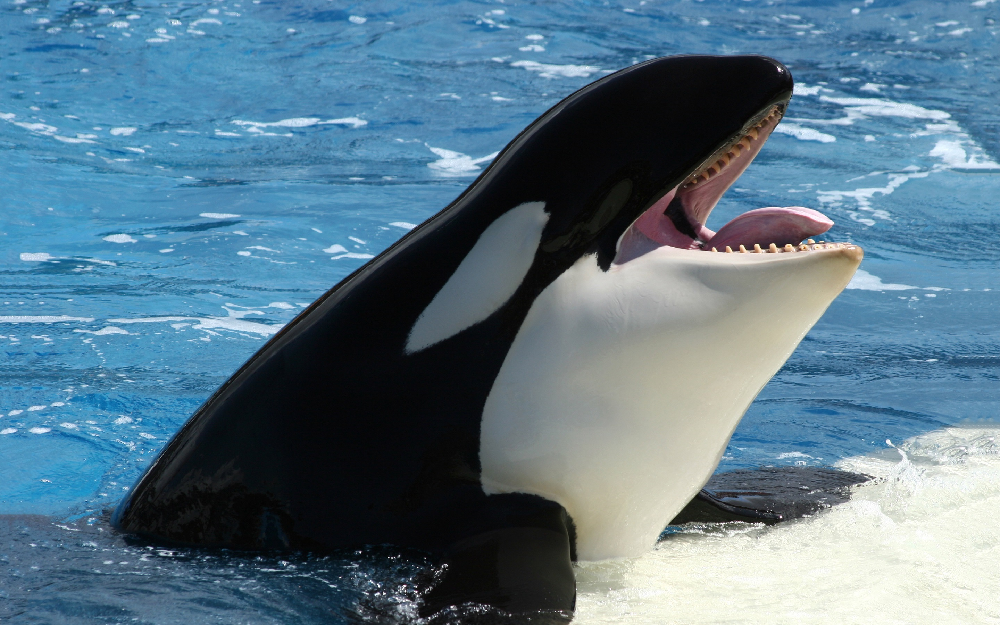

These animals deserve to be free!
Ever since the film "Blackfish" was released, more people have become aware of SeaWorld's harmful treatment of their animals, mainly thier orcas. But this is not enough. People shouldnt just be aware, we need to make a diference. These beautifully large aniamls suffer the most in captivity because of their size. Imagine spending your life in a bathtub; that is what it feels like to be an orca in captivity. Imagine not getting to eat because you did not perform a stunt properly. These animals deserve to be with their families in the wild. They can't save themselves, but we can save them. An animal as smart as a orca whale should not be confined to a tank.
The orcas at SeaWorld are often taken from their mothers, in the wild and at the parks. They are forced to breed and then have their babies taken away from them. Most of the orcas are not from the same pods so they do not get along. The orcas are known for having multiple rake marks on their bodies from whale-on-whale agression. In the wild, the orcas have tons of space to swim away and not fight, but in a tank, there is not where to go.
The whales at SeaWorld are also known for having collapsed dorsal fins; this is a sign of an unhealthy environment. SeaWorld likes to tell their visiters that this is a natural occurance in the wild, but it is not. Orcas tend to live very long lives. Males can live to be 60 to 70 years old, and females can live to be 80 to 90+ years old. The average life span of an orca whale at SeaWorld is 9 years.
